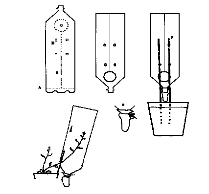

ARABIDOPSIS SEED HARVESTER
Mike Neff, Doug Ewing, & Luca Comai (Department of Botany KB-15,
University of Washington, Seattle, WA 98195 U.S.A. e-mail:
comai@milton.u.washington.edu ) * This is a description of a cheap and
functional seed harvester, which also prevents cross pollination. If you
want to see a real drawing, send a self-addressed (stamped?) envelope to
Luca Comai. (This protocol was on the Arabidopsis Bulletin Board, a
scanned image of the drawing is shown below.)
1. PROCEDURE (i) Collect 1.5 litre PET (the clear plastic) soda bottles.
In the US, these bottles are used for all sodas and bubbly water. This is a
good chance to recycle, but if you need a lot of seed collectors, contact a
local bottle maker (look in the yellow pages). They have new "reject"
bottles by the hundreds. (ii) Cut the bottle as shown. By these cuts you
will remove the bottom (A) and make a longitudinal cut (B) leading to a
large round cut (C) in the shoulder of the bottle. Punch the four holes (D)
on the side of the longitudinal cut with a hole puncher. Depending on the
size of your sticks (see below) and pots, you may want to change the
position of the holes slightly. (iii) Tie a small paper bag around the neck
of the bottle (E). Any paper will do and it is preferable to plastic because
it allows drying of the pods and seed even if some water is splashed
around. (iv) Thread two 30 cm wooden sticks (applicators) through the
small holes (F). (iv) Apply the collector to the pot after Arabidopsis has
bolted and the first pods are beginning to mature. The sticks are driven
into the soil mix of the pot and support the modified, upside-down bottle.
You can set the height of the collector by sliding it up or down the wooden
sticks. Open the collector by spreading the longitudinal cut and gently
push the inflorescence into the collector. New inflorescences can be
added as they form and the collector can be easily removed to harvest
early- shed seed. Multiple collectors can be added to a large pot. The tube
can be extended in length by taping to it an additional cylinder cut from a
bottle. However, we usually coil the inflorescence inside the tube rather
than increasing the tube length. (v) Once the pods are dry, thresh them
with a stick (beat it around inside the pod collector) and push seeds stuck
to the side of the collector into the pouch. Used collectors are easily
stored in nested stacks.
